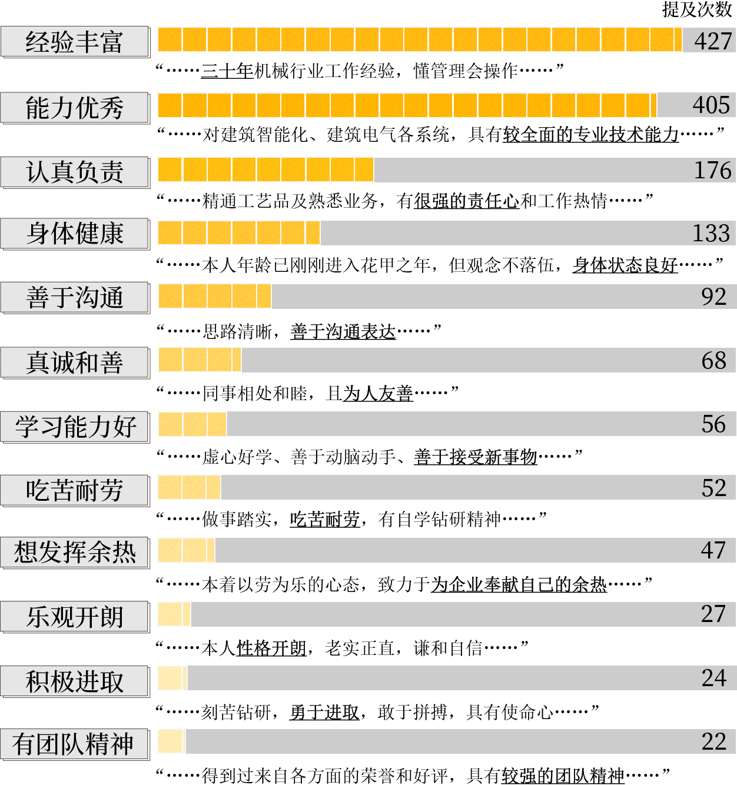

在我国，大龄的打工人正逐年增多。
根据中国人口普查资料测算，近三十年来，我国60岁以上在业人口持续增长。截止到2020年，已接近六千万，约占60岁以上人口总数的五分之一。
也就是说，我国每5个60岁以上的人中，就有一位仍在工作。
数据来源：2020年以前的数据转引自《中国人口老龄化和老龄事业发展报告》，均是由当年度人口普查相关数据除以某年龄段人口数据的抽样比例计算而来。参考此计算方法，2020年的就业人口数据为《2020中国人口普查年鉴》长表数据中的对应数据除以实际抽样比得出的约数，其中60岁以上人口数据的抽样比例为9.66717%，65岁以上人口数据的抽样比例为9.60513%。
为了解大龄打工人就业市场的现状，我们爬取了前程无忧、BOSS直聘与猎聘三家招聘网站上招聘退休后大龄群体的岗位，合计883条。
个人主观意愿和客观条件，共同推动着大龄打工人走上求职之路。
据前程无忧的调研报告数据，46.7%的退休求职者为寻求个人价值和社会价值重返就业市场。19%的求职者希望发挥一技之长，继续追求职业发展。
王立军夫妇今年六十多岁，他们二人一个是专业的机电技术人员，一个在社区卫生院工作，都在各自领域内有着丰富的经验。在退休之后，他们又分别被原单位返聘，继续着自己的工作。
像王立军夫妇这样的技术型人才，在专业岗位干了大半辈子，多年来积淀出的经验是他们工作经历中最宝贵的财富。退休后，“发挥余热”成了他们最大的愿望。
另外一些大龄打工人，他们虽然没有“发挥余热”的愿望，但也并不想在“还能干”的年纪停下脚步。
杨宽今年50岁，一辈子都在建筑工地干活。干建筑是个体力活，一口气扛起几十斤的水泥，一天砌几百块砖，对杨宽来说都是家常便饭。常年高强度的体力劳动带来的是越来越差的身体状况，他开始考虑离开工地。但杨宽并不想就此停下，他想再找一个轻松点的活，继续工作。
今年年后，杨宽在短视频平台上找到了一个在北京招快递分拣工的厂子，和中介简单定下工作后，他独自坐火车从老家山东来到了北京，那是他第一次离开家乡。
家里人并不赞成杨宽来北京工作，但杨宽是个倔脾气。一个下午的功夫，他“说来就来了”。
像杨宽一样，许多大龄打工人并不愿歇下脚步，有的即使已经退休，仍然在积极地寻找一份工作。在老年离退休人才网和中国老年人才网中，就有众多这样的求职者，他们将前半生的工作履历一一写进求职资料，以自身优点积极“自荐”，表达了如王立军夫妇和杨宽一样希望继续工作的强烈愿望。

注：离退休人才网与中国老年人才网都是为广大离退休人才实现再就业服务的人才交流平台。
数据来源：2018-2023共五年间离退休人才网和中国老年人才网上的求职者简历，爬取时间为2023年4月7日。
我们选取离退休者为样本，以最晚退休年龄，即男性≥60岁，女性≥55岁作为条件筛选简历，
并对其中带有自我评价的简历文本进行编码，共计701条。
在客观原因上，经济负担是最重要的一环。
今年3月，玉子在社交媒体上发布了一则帮妈妈陈欣找工作的帖子。
从2001年起，陈欣一直在一家服务业公司做财务工作，今年刚刚退休。
五年前，陈欣和丈夫感情破裂。那时，玉子还在申请国外留学，二人约定各自承担一半玉子的学费。但就在玉子申请成功后，丈夫突然“人间蒸发”，彻底断了联系。
为了让玉子安心读书，陈欣一个人担起了玉子的学费，一年就需要20多万。沉重的经济负担不允许陈欣的工作出现“空窗期”，正式退休的前几个月，她就已经开始海投找工作了。
“找工作这个事挺难说的，越是急着想找，越是找不到。”
玉子在帖子称她的妈妈陈欣为热爱生活、心态年轻的“女超人”，但在找工作这件事上，陈欣并没有像超人一样百战百胜。现实往往更加残酷，“处处碰壁”，是她给自己的大龄求职路总结出的“四字箴言”。
众多的大龄打工人，都对“碰壁”这件事深有体会，武广江也是其中之一。
下过雨的清晨，空气中的潮气还未散去，武广江站在马驹桥的街边“等活”。
马驹桥聚集着来自五湖四海的打工者，是北京最大的劳务市场。凌晨四五点是马驹桥最热闹的时刻，做日结零工的人们早早聚集在马驹桥的十字路口，寻找一天的活计。
小小的十字路口，在凌晨四点最多能塞下一千多人。
武广江却远离拥挤的十字路口，独自站在街边一家商铺的檐下。
马驹桥的人们很“自来熟”，今天有没有找到活、赚了多少钱、最近有什么活干，是他们最常聊的话题。热络的环境下，武广江显得有些笨拙，甚至“不合群”。
鬓角微微露出的白发也暗暗证明，武广江的确是有些“不合群”的。
在马驹桥找零活的人们大多三四十岁，但武广江今年已经64岁，在这里算得上是高龄。七八年前，经亲戚介绍，他从老家辽宁来到北京，开始做临时工。昌平、丰台、海淀、朝阳，北京的几个区，他都去过，保安、保洁、快递分拣，各种临时工的活，他也几乎都做过。
他说他在北京，是“流动”的。
除了在马驹桥找活，每周的周二、周六和周日，他还会去北京有名的大柳树夜市摆地摊，卖点从二手市场淘来的数据线、充电宝等小玩意。这是前年他为了维持生计，给自己发展出的副业，生意好的时候能赚到三百多块钱，但差的时候可能本钱都赚不来。
武广江身后的灰色双肩包里装着他还没有卖出去的商品。不需要摆摊的时候，他就背着这些还未卖出的小商品一起“流动”，找活干。
像武广江一样选择以体力劳动谋生的人，是这个求职世界的大多数。
根据2020年中国人口普查年鉴数据，除了广泛分布在农村的农林牧渔业，大龄打工人大多分布于制造业和建筑业。
数据来源：《2020年中国人口普查年鉴》
注：图中对应数据为55岁以上就业于某行业人数占该年龄段整体就业人口的比例。
图中仅展示了55岁以上人口选择从事行业中，除农林牧渔业外从业人口数最多的前十类行业。
（鼠标悬停可查看详情）
他们往往没有较高的学历和专业的技术，只能在工地和工厂打转，做着高重复性或高强度的体力活。
年龄，是决定求职之门是否为他们打开的关键因素。
因为年龄大了，尽管自认为身体健康、吃苦耐劳，大龄打工人的求职之路仍面临着“有心无门”的窘境。
期望的岗位已经早早为他们关上了大门，留给他们的，几乎都是那些“年轻人不愿意干”的工作。
因为干了很多年财务，最初找工作时，陈欣还想从事和之前一样的职业。但由于不同行业的财务岗位工作内容并不完全相同，原先一直在服务业公司工作的陈欣，本身能力上“也有挺多欠缺，偏bp、预算分析类什么的都没做过”。一些稍大一点的公司，一看到陈欣的年龄和从业简历，就直接把她淘汰掉了。
海投了很久之后，陈欣终于进入了一家很小的公司做财务工作。但是工作了两天，她发现这家公司的运作不太正规，干了两天就离开了。后来她不再执着于找自己擅长的财务工作，开始“广撒网”，寻找能够接纳她的工作岗位。
事实上，陈欣的期望职位只需要满足三个条件：朝九晚六、正规、工资说得过去。
然而家政、整理收纳、育儿辅食……能试的她都去试了一遍，却处处碰壁，到现在也没找到一份合适的工作。
在马驹桥，各个劳务中介所贴出的招工信息里，年龄限制也格外醒目。
张远杰在马驹桥的一家劳务中介工作了近十年，他将马驹桥现有的求职者划分为三类：
“一类是年轻人，18-40岁，靠着劳务中介或者其他途径，可以进厂，干长期工；
一类40-60岁，年龄太大了，没法进厂，等在路边，有活就干；
还有一类就是只想做日结不想做长期的，干一天，歇三天。”
在相对自由的劳务市场上，留给大龄打工人的选择也寥寥无几：
杨宽按照约定来到北京丰台做快递分拣工作，才知道厂子对快递分拣工的年龄要求是50岁以下。杨宽刚好50岁，对方稍微把年龄限制放宽了一些，他才获得了这个工作机会。
64岁的武广江几乎是马驹桥年纪最大的打工人。在马驹桥找工的人们大都有一些相似的特征：他们爱穿深色衣服，衣服上附着着一层灰尘，沾着或多或少，难以洗干净的水泥点。土和灰也同样钻进他们的指缝，浸透进他们手掌的纹路里，经年累月形成灰色的皲裂。这都是常年的工地工作给予他们的。
在这里，武广江陈旧但干净的呢子外套显得有些不合群，似乎也在暗示着，他已经超过了能够被工地接纳的年纪，失去了这样“满身泥土”的机会。现在在马驹桥，武广江一个星期大概只有两三天能有活干。上次干的活是在一个正在拆迁的工地做临时保安，负责维护拆迁秩序，活不太累，但一天只有一百二十块钱。
为了观察大龄蓝领劳动者所面临的“年龄红线”，我们爬取了专门针对蓝领工人及日结零工的招聘平台——“鱼泡网”上近一个月发布的1794条招聘信息。其中，有1728个岗位招聘男性，1344个岗位招聘女性。
在所有岗位招聘信息中，超过六成的招聘信息对年龄提出了明确的限制。
在这些明确要求年龄的岗位中，仅有不足两成岗位的最大年龄限制在45岁以上。
对于主要从事建造业、制造业的蓝领劳动者群体来说，40岁已经成为一道不容忽视的就业门槛。
数据来源：3月17日至4月17日期间，鱼泡网上发布的1794条招聘信息，
其中1172条招聘信息对招工最大年龄提出了要求。
（鼠标悬停可查看具体数值）
更重要的是，常年生活在马驹桥的人最近都有同一个感受——今年，活不好找了。
前两年，在马驹桥根本不愁没活干，很多人都能找到“八个小时赚三百多块钱”的工作。今年为什么突然招工的少了，那里的人也说不清，但他们认为，这应该和现在经济下行有关。
可干的活少了之后，工厂都倾向于直接找熟人干活，来劳务市场大范围招人的情况越来越少，“现在我们的用工群里都没什么招聘信息发，有熟人，谁愿意从这里找不知道靠不靠谱的呢。”
前几年在马驹桥，武广江也能接到各种各样的活，他特别提到，他还当过好几次群众演员，这是他最喜欢干的活之一，“一天就两三个小时，也不累，盒饭里有好几个鸡腿，矿泉水随便喝。”他还能模仿出当时“拍戏”时，自己做过的拿枪的动作。但现在，在马驹桥这样的劳务市场，群演的工作已经完全没有，还有很多工作，也像群演一样悄声消失。
当“找工难”成为劳务市场的普遍现象，像武广江、杨宽一样的大龄打工人，只会面临更加严峻的处境。
求职的大门何时为他们打开，仍然是个未知数。
即使求职的大门真的开启，门内的世界也不一定尽如人意。
2023年2月份，浙江宁波一位60岁的快递分拣工人，因心脏骤停于凌晨时分猝死在岗位上。由于他年满60周岁，无法与快递公司建立劳动合同关系，因而无法缴纳工伤保险，也就无法进行工伤认定。近年来的类似报道，使得超龄打工人的权益保障问题愈发走入公众的视野。
超龄，意味着打工人在法律意义上不再能够与用工方签订劳动合同，从而失去相应的权益保障。一旦发生意外，维权将变得难上加难。
超龄打工人的窘境与我国目前实行的退休制度有关：我国现行的退休制度属于法定退休制度和强制性退休制度，即在达到法定退休年龄后，就必须结束正在进行的劳动关系，办理退休手续。在超出法定退休年龄之后继续工作的超龄打工人，只能与用人单位成立劳务关系而非劳动关系。建立劳务关系，则意味着他们的工作过程不再受《劳动法》和《劳动合同法》保护。
我们爬取了裁判文书网有关超龄劳动争议的案件数据，其中，有关工伤认定的问题最为突出。某案件按照我国《工伤保险条例》第十八条规定，作出如下判决：“工伤认定的前提是存在劳动关系，原被告之间不存在劳动关系。”
在司法实践中，正是超龄劳动者与用人单位之间构成的“劳务关系”成为其工伤认定的门槛。同时，用人单位不再能够为其缴纳工伤保险，仅能为超龄劳动者缴纳商业保险。即使打工人能够拿到赔偿，其赔偿标准也并非真正意义上的“工伤”赔偿。
近年来，国家相关部门也在认识和实际做法上有所转变，但针对超龄劳动者在工作中伤亡应否认定为工伤这一问题，现行法律中并没有明确规定，已有的相关规定也存在一定冲突。
例如《最高人民法院行政审判庭关于超过法定退休年龄的进城务工农民因工伤亡的，应否适用〈工伤保险条例〉请示的答复》（下称《答复》）认为，用人单位聘用的超过法定退休年龄的务工农民，在工作时间内、因工作原因伤亡的，应当适用《工伤保险条例》的有关规定进行工伤认定；而新出台的《最高人民法院关于审理劳动争议案件适用法律问题的解释（一）》中规定，用人单位与其招用的已经依法享受养老保险待遇或者领取退休金的人员发生用工争议而提起诉讼的，人民法院应当按劳务关系处理。
也有部分省市做出了有益尝试。例如在2020年12月31日，广东省发布了《关于单位从业的超过法定退休年龄劳动者等特定人员参加工伤保险的办法（试行）》。根据该办法，广东省区域内的超龄劳动者可以参加工伤保险，不论其是否享受养老保险待遇。
然而目前，由于法律适用不统一，实践中，司法人员对“领取退休金或养老保险待遇”、“劳动者与用人单位之间关系认定”等问题的理解各不相同，各地在超龄劳动者工伤认定中仍然存在较大差异，同案不同判现象一直存在：广东、江苏等地法院普遍支持参照适用《答复》，而浙江等地法院则持否定态度。
判决书数据显示，除了工伤认定问题，“超龄”给打工人带来的麻烦仍有不少。在司法劳动争议案件中，用人单位往往以“无法签订劳务合同、未建立劳务关系”为由，拒绝支付打工者诉求中的各类薪酬待遇、赔偿金等。还有部分用人单位违法未给尚未退休的劳动者缴纳社保，影响其退休后的养老保险与医疗保险。在正式“打官司”之前，当劳动者试图维护权益时，由于“超龄”曾直接被当地有关部门与劳动人事争议仲裁委员会不予受理的多达上百例。
大龄打工人近乎赤条条地推开了求职的大门，在充满不确定性的门内世界，仍有一块权益保障的短板等待弥补。
在老龄化问题逐渐严重的今天，如何更好地解决大龄人群的就业状况，已经成为了社会各界亟待解决的问题。
2021年起，我国政府陆续出台相关政策，推动发挥“银发红利”，鼓励大龄人口、低龄老年人再就业，并完善相关就业保障。
2022年2月，国务院印发关于“十四五”国家老龄事业发展和养老服务体系规划的通知，通知第二十一条重点提到了老年人的再就业问题，提出要加强老年人就业服务、促进老年人社会参与，涉及到职业介绍、职业技能培训、社会组织规范化等多个方面。
2003年
全国老龄委“银龄行动”
倡导组织全国大中城市离退休老年知识分子向经济欠发达地区开展智力援助行动。
2006年
《中国老龄事业发展“十一五”规划》
第一次将“老有所为”的对象推及到广大老年人群，并开始关注老年就业问题。
2011年
《中国老龄事业发展“十二五”规划》
首次提出注重开发老年人力资源，鼓励老年人参与经济发展与社会公益。
2017年
《“十三五”国家老龄事业发展和养老体系及建设规划》
首次大篇幅论述老年就业，并提到要对有需要的老年人进行创业培训。
2021年
国务院《关于加强新时代老龄工作的意见》
指出充分发挥低龄老年人作用，探索适合老年人灵活就业的模式。
2022年
国务院《关于印发“十四五”国家老龄事业发展和养老服务体系规划的通知》
鼓励各地建立老年人才信息库，为有劳动意愿的老年人提供再就业服务；健全相关法律法规与政策，保障老年人劳动就业权益与创业权益。
但“武广江们”、“陈欣们”的打工历程，仍然困难重重。背负着生活的压力，年龄已经是他们再努力也迈不过的红线，求职的大门已然难以推开，门内的世界也充满危险。
对于大龄打工人求职困难的问题，中国人民大学公共管理学院社会保障研究所的陈鹤副教授认为，在很难改变就业大环境严峻的情况下，政府应当从体力要求、技术要求等方面研究哪些职位适合大龄打工人，并采取一些政策鼓励企业雇佣他们。与此同时，大龄求职者个体也需要对当前的就业形势有清晰的认识，做好个人职业定位。毕竟在经济新常态情况下，除了这些人，还有新毕业的大学生也正在投身就业浪潮。
另一方面，陈鹤副教授以退休返聘人员为例指出，工伤保险是需要关注的一个重要问题，他们本身处于退休身份，很难在我国的工伤保险中参保。这一问题在司法实践中差异也较大，需要国家调整相关政策。
放眼全球，日本、韩国、美国等国家也在关注着大龄打工人的就业问题。
作为老龄化严重国家，日本推出的相关政策十分完善。早在20世纪70年代，日本就制定了促进中老年人就业的特别措施法，该法律历经多次完善修订，成为日本现行的“老年人稳定就业法”（日文直译为《高年龄者雇佣安定法》）。2020年3月，这部法律做了新的修订，增加了用人单位在确保满足老年人到70岁为止享有就业机会，为老龄人口就业提供了坚实的法律保障。
德国作为欧盟老龄化程度最高的国家，则积极采取措施提高老年就业能力，从而应对就业人口老龄化挑战。早在2005年，德国政府就启动了“50岁以上再就业计划”，从大龄劳动力的健康、工作灵活性和工作能力三个方面提供就业援助，最大化地保障了大龄人口的再就业与经济社会参与度。
有国外先例的辅助，也许能够帮助我们更好地解决我国的大龄人口就业问题。
制作团队
采访及数据分析：夏昊扬 李曼宁 吴一帆 蔺晨羿 郝灵蕴
撰文：李曼宁
数据可视化及设计：夏昊扬 郝灵蕴
前端：吴一帆
指导老师
戴玉老师 刘萍老师
特别鸣谢
王海波老师 韩璐
联系方式
xiahaoyang@cuc.edu.cn
(文中出现的人名皆为化名，感谢所有受访者)
参考文献：
[1] 刘杰.日本老年人就业政策对中国老龄化应对的启示[J].当代经济,2020,No.505(01):4-6.
[2] 沈铭辉.人口老龄化的影响及治理对策——以韩国为例[J].人民论坛,2020,No.687(32):91-93.
[3] 毛景.美国高龄劳动者就业保障制度及其镜鉴[J].交大法学,2022,No.43(05):128-137.
[4] 杨志超.北欧老年就业政策对我国延迟退休制度的启示[J].学术界,2013(07):214-221+312.
[5] 刘燕妮.德国老年就业策略对中国城市老年就业的启示[J].齐齐哈尔大学学报(哲学社会科学版),2015,No.225(11):56-59.
© 中国传媒大学·新闻学院·2023